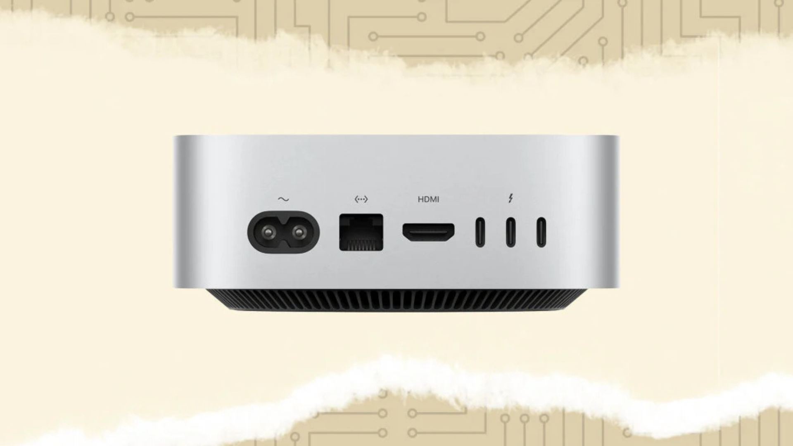
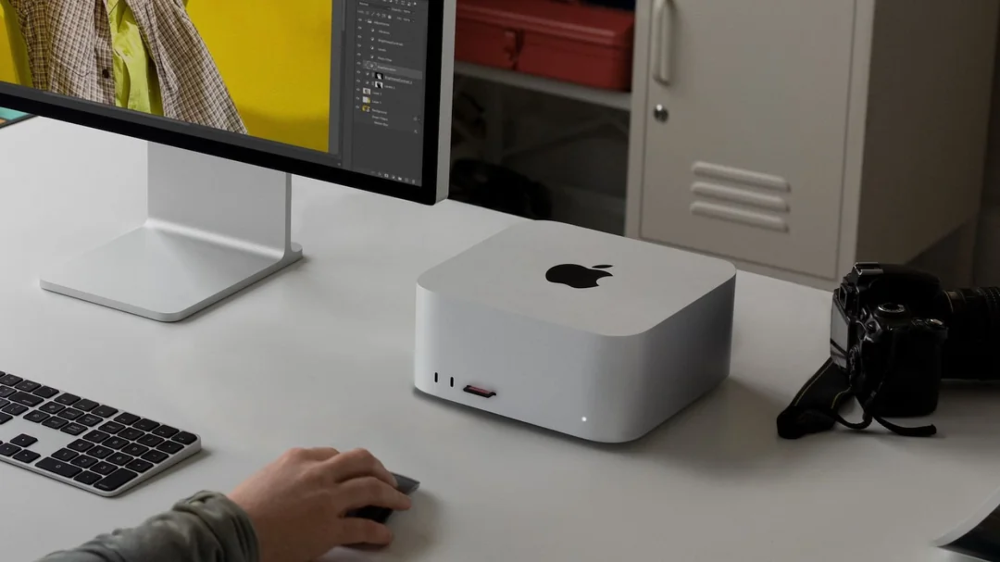
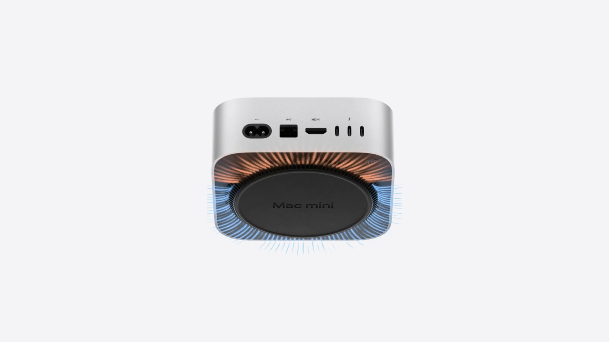
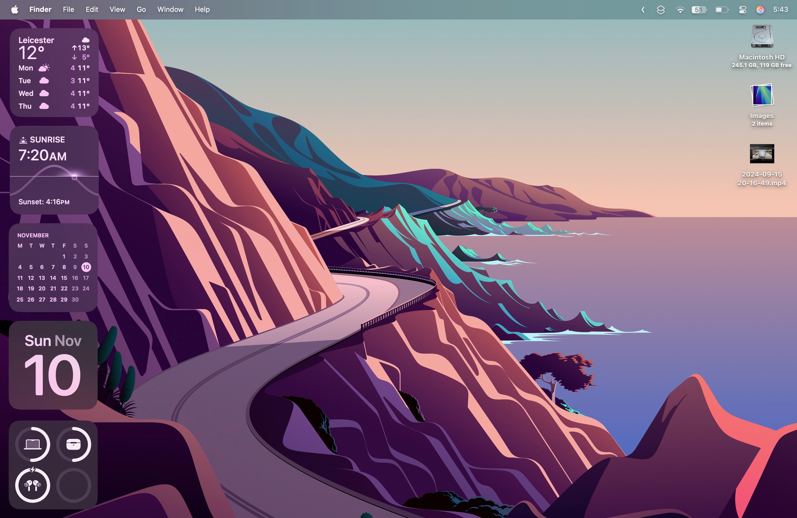

M4 Mac Mini: Small in Price, Big In Tech!


On November 8th, the Mac Mini hit the stores for a whopping £600 (or £500 with Educational Savings). Although this price point is consistent and an industry standard with the Mac Mini lineup, this year it holds a lot of weight when you consider the device's specifications.
This year, Apple has prioritized raising the bar, primarily with device "starting at" specifications. Previously, the standard for devices was 8GB; however, it seems that Apple is slowly phasing that out and going with the requested 16GB standard, which is an incredible deal.
Now, here's the interesting part. The Mac Mini is truly mini now. The Mac Mini's design and form factor have been updated for the first time in 14 years! This is something that a lot of us didn't expect, especially with Apple releasing the Mac Studio a few years ago, which proved to be much larger than the standard Mac Mini. Now, the M4 Mac Mini is scaled to a similar size to the Apple TV device, which is incredibly impressive.

The M4 Mac Mini comes with two USB-C ports and a headphone jack. On the back, it's packed with HDMI, ethernet, and 3 Thunderbolt ports. When you consider all of this, I'd consider this one of the best deals on the market, which is surprising since it's Apple.
Most importantly, this Mac Mini comes with M4, which supports Apple Intelligence. This is incredibly impressive, as Apple Intelligence has yet to be released on budget options, with it only supporting the newest of products.
The M4 Mac Mini also has "hardware-accelerated ray tracing," which will help you for the occasional and light gaming session. When you take into consideration how the Mac Mini can handle almost everything, e.g., Music & Video Production, Gaming, Media Consumption, it's an amazing deal.
Now, there's one big issue that's been brought up over the past few days, and that's the location of the power button. In Apple fashion, they chose to alter something to make it slightly unique, and that's the power button location.
Unlike in the previous models, to achieve a sleek design, they've chosen to relocate the power button to the bottom of the machine, which means you'll have to lift up your Mac to turn it on each time. Personally, I don't see this as much of an issue, especially since they've put the space where the power button used to be to use.

However, many creators have found problems with this and have chosen to work on solutions. A majority of them have just leaned towards 3D printing workarounds, which work by applying pressure on the power button. Personally, if I bought one, I'd just lift it up each time to power it up.
Now, this leaves us with the question, "Should you buy it?" Well, that depends on the circumstances of your current desktop. I'd personally recommend sticking with your previous device if you're already running Apple Silicon, as I feel like it's not as big of a bump as it should be. However, if you're running Intel, I'd say go for it!
The price of the Mac Mini is by far the best out of all Apple products; it's the most fair. I run a MacBook Air from 2017, and to think I can spend just a few hundred and get a brand new Mac Mini is incredible. However, there are a few things that need to be factored in.
For starters, going from a MacBook to a Mac Mini means I'd lose my screen and keyboard. Although I use my MacBook with a Thunderbolt to HDMI adapter and with a Magic Keyboard and Mouse, I'd still feel like I'm missing out on something.

I spend a lot of time working on the move, either on the train or on my college campus. It seems impractical for me to get a Mac Mini unless I'm willing to carry around a portable monitor and my Magic Keyboard and Mouse.
In this situation, I'm just going to gravitate to getting an Apple Silicon MacBook. Although they retail for double the price, I think considering the price to performance, it's a good deal, especially when I'm getting a screen and a keyboard.
However, it's up to you to make the decision. I'd personally recommend it if you're in the market for a Mac upgrade, but equally, if you're a MacBook user, I'd suggest going for a MacBook.
Either way, I'm sure you'll be happy with your purchase, especially with Apple improving the devices each year.